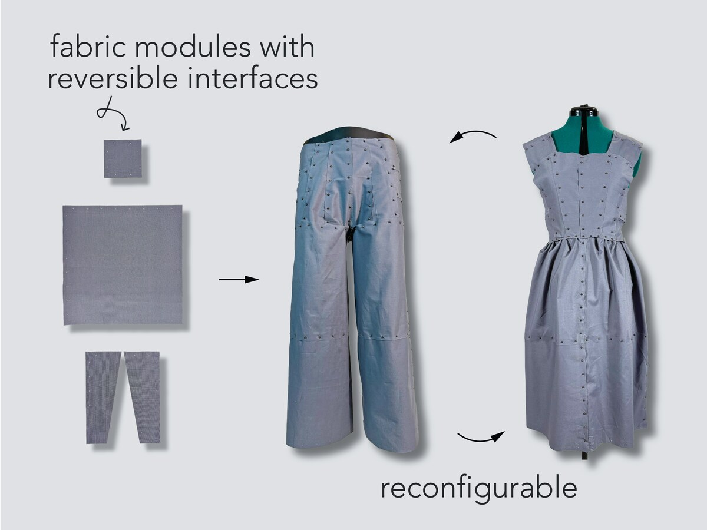

Refashion: Reconfigurable Garments via Modular Design
How can we design garments for change and reuse? By treating garments as dynamic assemblies rather than static products, Refashion enables users to remix their garments on demand.Refashion was born on Aug. 15, 2024, when I raided the Adobe office for 600 Post-it notes and stayed up all night making a ballgown.